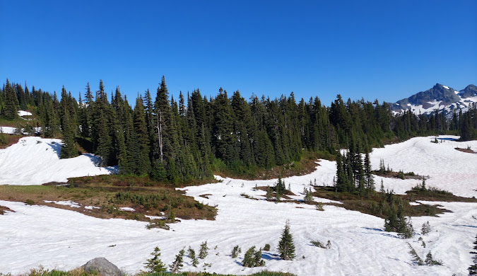
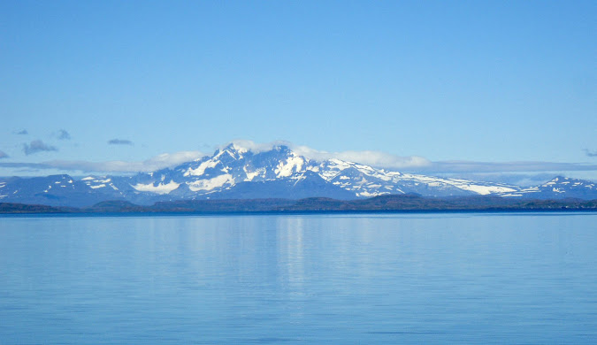

Mont Ross
Rising 1,850 meters (6,070 feet), Mont Ross is a stratovolcano, the tallest mountain in the Kerguelen Islands. Situated on the main island Grande Terre east of Baie Larose in the Gallieni Massif, at the end of the Gallieni Peninsula, it is mainly formed of trachybasalt, the volcano was active throughout the late Pleistocene. Eruptives date from 2 million years to 100,000 years old.
 